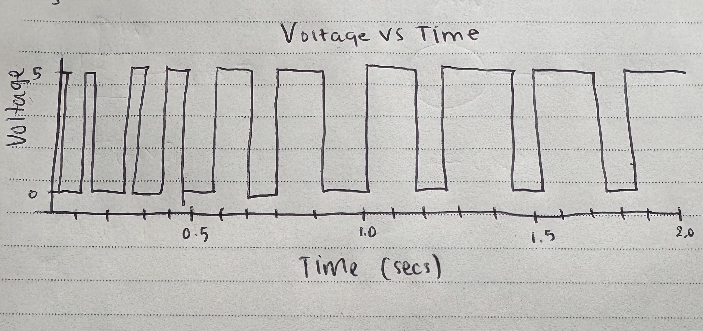

Code
#include // Includes the Servo library to control servo motors
#include // Includes the IRremote library to handle infrared signals
Servo servo; // Creates a Servo object to control a servo motor
const int servoPin = 9; // Defines the pin number (9) where the servo connects
const int IR_RECEIVER_PIN = 7; // Defines the pin number (7) where the IR receiver connects
IRrecv irrecv(IR_RECEIVER_PIN); // Creates an IRrecv object to receive IR signals on pin 7
decode_results results; // Creates a decode_results object to store the decoded IR signals
bool servoOn = false; // Boolean variable to track the servo's state (on or off)
unsigned long lastIRTime = 0; // Stores the last time an IR signal is received (in milliseconds)
const unsigned long debounceDelay = 500; // Sets a delay time of 500 milliseconds to prevent multiple detections from a single button press
bool buttonPressed = false; // Boolean variable to track the button's pressed state
void setup() {
pinMode(IR_RECEIVER_PIN, INPUT); // Sets the IR receiver pin as an input pinMode(servoPin, OUTPUT); // Sets the servo pin as an output
servo.attach(servoPin); // Attach the servo object to the servo pin
irrecv.enableIRIn(); // Start the IR receiver to begin listening for signals
}
void loop() {
// Check if an IR signal is received and enough time has passed since the last one
if (irrecv.decode(&results) && millis() - lastIRTime > debounceDelay) {
// If the received value is not a repeat code
if (results.value != 0xFFFFFFFF) {
if (!buttonPressed) {
servoOn = !servoOn; // Toggles the servo state (on becomes off, off becomes on)
buttonPressed = true; // Indicates that the button is pressed
}
} else { // If the received value is a repeat code
if (buttonPressed) {
servoOn = false; // Turns the servo off
buttonPressed = false; // Indicates that the button is released
}
}
lastIRTime = millis(); // Updates the last IR signal time to the current time
irrecv.resume(); // Prepares the IR receiver to receive the next signal
}
servo.write(servoOn ? 180 : 0); // Sets the servo position to 180 degrees if on, otherwise to 0 degrees
}
Caption: Firmware code for the Libraries circuit, demonstrating the use of the Servo library to control the servo motor.
Questions
1. Say you are using a servo motor attached to pin 9. In your loop() you have the following code:
for (int i = 0; i < 180; i++) {
myServo.write(i);
delay(100);
}
Draw a graph with the X-axis in seconds, for two seconds, and the Y-axis the voltage at pin 9 with respect to ground.

In this code, the servo motor is commanded to move from 0 to 179 degrees, with a 100ms delay between each increment. Over two seconds, the servo completes approximately 20 steps, resulting in a linear increase in position. The voltage at pin 9 remains constant at 5V during the entire operation, as the Servo library controls the servo using PWM signals, which are not directly measurable as a DC voltage at the control pin.
2. Your input device is slightly broken, leading it to give us an erroneous reading 1% of the time. How can we address this? Answer in (pseudo)code.

To handle occasional erroneous readings from an input device, we can implement a simple validation check to discard outlier values. Here's an example in pseudo-code:
int readSensor() {
int sensorValue = analogRead(sensorPin);
if (sensorValue < MIN_VALID_VALUE || sensorValue > MAX_VALID_VALUE) {
return -1; // Indicate an invalid reading
}
return sensorValue;
}
void loop() {
int value = readSensor();
if (value != -1) {
// Process the valid sensor value
} else {
// Handle the invalid reading (e.g., retry or use a default value)
}
}
In this approach, we define a range of valid sensor values. If a reading falls outside this range, it's considered erroneous and discarded. This method helps maintain the integrity of the data used in the application.
3. Your input device is slightly noisy, leading the measurement to randomly deviate from the true measurement up or down by 10%. How can we address this? Answer in (pseudo)code.

To mitigate random noise in sensor readings, we can implement a moving average filter to smooth the data. Here's an example in pseudo-code:
const int NUM_READINGS = 10;
int readings[NUM_READINGS];
int readIndex = 0;
int total = 0;
int average = 0;
void setup() {
// Initialize all readings to 0
for (int i = 0; i < NUM_READINGS; i++) {
readings[i] = 0;
}
}
int readSensor() {
total -= readings[readIndex];
readings[readIndex] = analogRead(sensorPin);
total += readings[readIndex];
readIndex = (readIndex + 1) % NUM_READINGS;
average = total / NUM_READINGS;
return average;
}
void loop() {
int value = readSensor();
// Use the smoothed sensor value
}
This method maintains an array of the last N sensor readings and computes their average. By averaging multiple readings, random noise is reduced, resulting in a more stable and accurate measurement. The size of the window (NUM_READINGS) can be adjusted based on the desired level of smoothing.